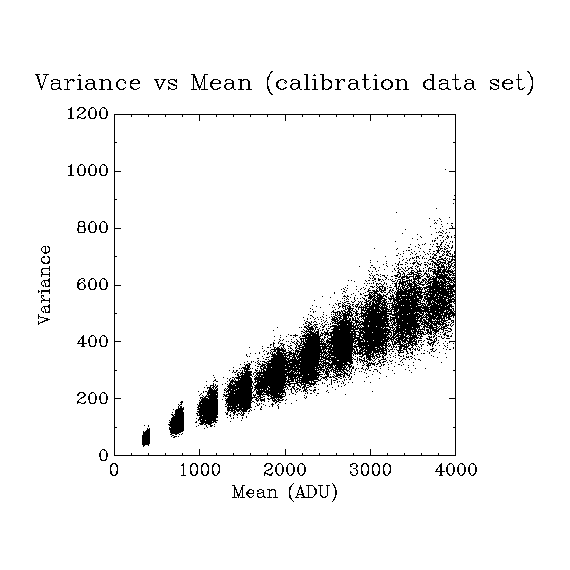

The analysis in C
Table of Contents
1 Introduction
The idea here is to perform the analysis using a mixture of C code and basic POSIX functions like the graph of the plotutils package.
1.1 Getting the data
The data we are going to use as illustrations were recorded by Andreas Pippow Kloppenburg Lab, University of Cologne and are freely available in HDF5 format at the following URLs:
- http://xtof.disque.math.cnrs.fr/data/CCD_calibration.hdf5 for the calibration data.
- http://xtof.disque.math.cnrs.fr/data/Data_POMC.hdf5 for the POMC data.
We download them to our local hard-drive with:
wge http://xtof.disque.math.cnrs.fr/data/CCD_calibration.hdf5 wget http://xtof.disque.math.cnrs.fr/data/Data_POMC.hdf5
The data sets can then be quickly inspected and (partly) plotted with HDFView, a JAVA utility. They can also be explored using few command line functions that come with the hdf5 library:
h5ls CCD_calibration.hdf5
| 100ms | Group |
| 10ms | Group |
| 20ms | Group |
| 30ms | Group |
| 40ms | Group |
| 50ms | Group |
| 60ms | Group |
| 70ms | Group |
| 80ms | Group |
| 90ms | Group |
We see that the CCD_calibration.hdf5 file contains 10 groups corresponding to each of the 10 exposure times (from 10 to 100 ms). Let us look more closely at the "10ms" group:
h5ls CCD_calibration.hdf5/10ms
| stack | Dataset | {60, | 80, | 100} |
| time | Dataset | {100} |
This group like all the others contains two data sets, stack (the stack of 100 images taken by the 60 x 80 CCD chip) and time (the vector containing the onset time of each exposure).
2 Getting the mean and variance of each pixel for each exposure time
2.1 A remark on the code presentation
The literate programming approach is used here. This means that the code is broken into "manageable" pieces that are individually explained, they are then pasted together to give the code that will actually get compiled. These manageable pieces are called blocs and each bloc gets a name like: <<name-of-the-bloc>> upon definition. It is then referred to by this name when used in subsequent codes. See Schulte, Davison, Dye and Dominik (2010) A Multi-Language Computing Environment for Literate Programming and Reproducible Research for further explanations.
2.2 The code
We use the functions of the GSL (Gnu Scientific Library) for all the "non trivial" computations. The C code doing the job will output its results to stdout (the standard output). This code will have to work on individual stacks of images. For each exposure time, this image stack must be read from the data file. We write next the few lines of codes allocating the necessary memory and populating it with the image stack data. The following pre-defined variables appear in this code (<<read-image-stack>>):
file_id(hid_t): the stream to theHDF5data file.dsetnames(vector of strings): the names of the data sets to analyze.dset_idx(int): the index of the data set.
/* read dataset */ int rank; H5LTget_dataset_ndims(file_id,dsetnames[dset_idx],&rank); hsize_t dims[rank]; H5LTget_dataset_info(file_id,dsetnames[dset_idx],dims,NULL,NULL); int n_elt = 1; for (int i=0; i < rank; i++) n_elt *= dims[i]; int data[n_elt]; H5LTread_dataset_int(file_id,dsetnames[dset_idx],data);
After opening the HDF5 file containing the data set, our code must extract the stack collected at each exposure duration and for each of the 60 x 80 pixels of the chip the mean and variance computed over the successive exposures are obtained. So we start by defining a function that takes:
data(int *): a pointer to one stack (containing integers).row_idx(size_t): the row index of the pixel.dim_1(size_t): the number of columns of the stack of images.col_idx(size_t): the column index of the pixel.dim_2(size_t): the number of images of the stack of images.mean(double *): a pointer to the computed mean.var(double *): a pointer to the computed variance.
The function returns 0 is everything goes fine. The definition of bloc <<mean_and_var>> follows:
int mean_and_var(int data[], size_t row_idx, size_t dim_1, size_t col_idx, size_t dim_2,
double *mean, double *var ) {
double data_dbl[dim_2];
for (size_t k=0; k < dim_2; k++) data_dbl[k] = (double) data[dim_1*dim_2*row_idx+dim_2*col_idx+k];
*mean = gsl_stats_mean(data_dbl,1,dim_2);
*var = gsl_stats_variance_m(data_dbl,1,dim_2,*mean);
return 0;
}
The header of our file is here (<<mean_var_CCD_calibration-header>>):
#include <string.h> #include <stdio.h> #include <gsl/gsl_statistics.h> #include <hdf5.h> #include <hdf5_hl.h>
And the main function definition becomes:
<<mean_var_CCD_calibration-header>>
#define FILE "CCD_calibration.hdf5"
char *dsetnames[]={"/10ms/stack","/20ms/stack","/30ms/stack","/40ms/stack","/50ms/stack",
"/60ms/stack","/70ms/stack","/80ms/stack","/90ms/stack","/100ms/stack"};
<<mean_and_var>>
int main( void )
{
/* open file from ex_lite1.c */
hid_t file_id = H5Fopen (FILE, H5F_ACC_RDONLY, H5P_DEFAULT);
for (int dset_idx=0; dset_idx < 10; dset_idx++) {
<<read-image-stack>>
for (size_t i=0; i < dims[0]; i++) {
for (size_t j=0; j < dims[1]; j++) {
double mean,var;
mean_and_var(data, i, dims[1], j, dims[2], &mean, &var);
printf("%g \t %g \n",mean,var);
}
}
}
/* close file */
H5Fclose (file_id);
return 0;
}
The code is saved in a file named mean_var_CCD_calibration.c and is compiled with (assuming that the LD_LIBRARY_PATH variable is properly set):
gcc -W -g -o mean_var_CCD_calibration mean_var_CCD_calibration.c -lhdf5 -lhdf5_hl -lgsl -lgslcblas -lm
It is then used in combination with the graph function to give:
./mean_var_CCD_calibration | graph -T X -m 0 -L "Variance vs Mean (calibration data set)" -X "Mean (ADU)" -Y "Variance"

3 Weighted least-square fit of the Variance versus the Mean
The C code doing the job is defined in blocks as before. The header (<<wlstsq_CCD_calibration-header>>) is slightly different since we need gsl_fit:
#include <string.h> #include <stdio.h> #include <gsl/gsl_statistics.h> #include <gsl/gsl_fit.h> #include <hdf5.h> #include <hdf5_hl.h>
Then the main function containing file looks like the previous one. Function mean_and_var is used again. Two vectors mean and var containing the mean and variance at each pixel for each exposure time are affected first. Then a vector w containing the weights (inverse of the variance) is affected and a weighted least square fit is performed with function gsl_fit_wlinear.
<<wlstsq_CCD_calibration-header>>
#define FILE "CCD_calibration.hdf5"
#define RANK 3
#define N0 60
#define N1 80
#define N2 100
char *dsetnames[]={"/10ms/stack","/20ms/stack","/30ms/stack","/40ms/stack","/50ms/stack",
"/60ms/stack","/70ms/stack","/80ms/stack","/90ms/stack","/100ms/stack"};
<<mean_and_var>>
int main( void )
{
hid_t file_id = H5Fopen (FILE, H5F_ACC_RDONLY, H5P_DEFAULT);
int rank = RANK;
hsize_t dims[RANK] = {N0,N1,N2};
int n_elt = N0*N1*N2;
int data[n_elt];
double mean[N0*N1*10];
double var[N0*N1*10];
size_t r_idx=0;
for (int dset_idx=0; dset_idx < 10; dset_idx++) {
/* read dataset */
H5LTread_dataset_int(file_id,dsetnames[dset_idx],data);
for (size_t i=0; i < N0; i++) {
for (size_t j=0; j < N1; j++) {
mean_and_var(data, i, N1, j, N2, &mean[r_idx], &var[r_idx]);
r_idx++;
}
}
}
double w[N0*N1*10];
for (int i=0; i < N0*N1*10; i++) w[i] = 1/var[i];
double intercept,slope,sigma_intercept,sigma_cross,sigma_slope,chisq;
gsl_fit_wlinear (mean, 1, w, 1, var, 1, N0*N1*10,
&intercept, &slope, &sigma_intercept, &sigma_cross, &sigma_slope,
&chisq);
printf ("# best fit: Var = %g + %g * Mean\n", intercept, slope);
printf ("# covariance matrix:\n");
printf ("# [ %g, %g\n# %g, %g]\n",
sigma_intercept, sigma_cross, sigma_cross, sigma_slope);
printf ("# chisq = %g\n", chisq);
printf ("# degrees of freedom = %d\n\n", N0*N1*10-3);
printf ("# gain: %g \n# read-out-variance: %g\n",slope,intercept/slope/slope);
/* close file */
H5Fclose (file_id);
return 0;
}
The code is saved in a file named wlstsq_CCD_calibration.c and is compiled with:
gcc -W -g -o wlstsq_CCD_calibration wlstsq_CCD_calibration.c -lhdf5 -lhdf5_hl -lgsl -lgslcblas -lm
It is simply used with:
./wlstsq_CCD_calibration
# best fit: Var = 5.76432 + 0.142805 * Mean # covariance matrix: # [ 0.0111791, -5.38295e-06 # -5.38295e-06, 4.06825e-09] # chisq = 301438 # degrees of freedom = 47997 # gain: 0.142805 # read-out-variance: 282.658